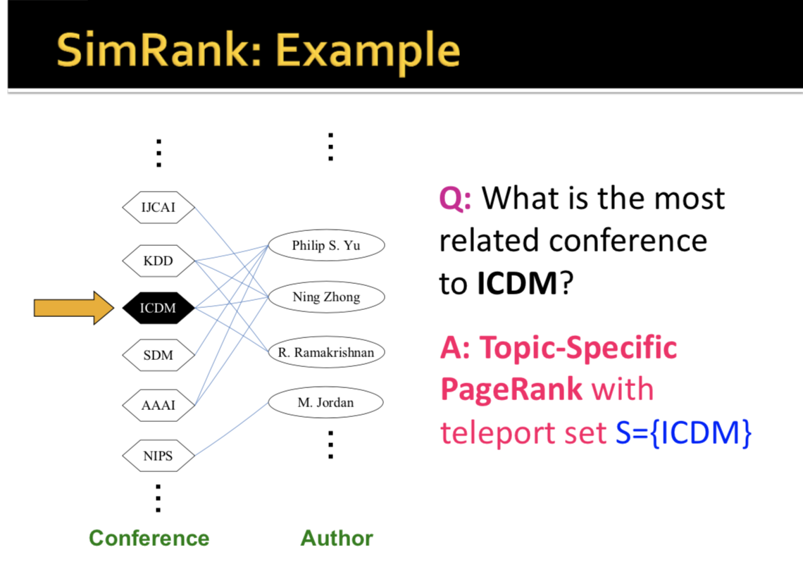

Lecture 10 - Link Analysis: TrustRank and WebSpam
Base PageRank. Teleport set S is S=[0.1,0.1,0.1,0.1,0.1,0.1,0.1,0.1,0.1,0.1]
Topic-Specific PageRank (aka Personalized PageRank)
PageRank where nodes have different probabilities of teleport. #S = [0.1, 0, 0, 0.2, 0, 0, 0.5, 0, 0, 0.2]#
- Instead of generic popularity, can we measure popularity within a topic?
- Goal: Evaluate Web pages not just acording to their popularity, but also by how close they are to a particular topic, e.g. 'sports', 'history'. Allows search queries to be answered based on interests of user.
- Example: Query 'Trojan' wants different pages depending on whether you are interested in sports, history, or computer security.
- Implementation: Modify the probabilities of the teleport set of the random walk such that they only land within a topic-specific set S of relevant pages.
This creates a different PageRanks for different topics.(1)
Which topic ranking to use?
- Use the context of the query (historical query or web page query is launched by) to figure out the query topic.
- Use user context such as user bookmarks, metadata
SimRank: (aka Random Walk with Restarts) Measuring Proximity in Graphs
Topic-Specific PageRank where teleport is always the same node. S=[0,0,0,0,1,0,0,0,0,0,0]
How to compute proximity in graphs? Need a method that considers:
- Multiple connections
- Multiple paths
- Direct and indirect connections
- Degree of nodes
- Punish long paths and not short paths
SimRank: Random Walks from a fixed node on k-partite graphs.
Setting: k-partite graph with k types of nodes (i.e. Authors, conderences, Tags), like below. This is used in e.g pintest where we have a bipartite graph of pins and boards,
SimRank = Topic Specific PageRank for k-partite graph with teleport set just node u: teleport set S=u
Resulting scores measure similarity/proximity to node u. (2)
Problem: Must be done once for each node u, so very limited in size.
Pixie Random Walk Algorithm for k-partite graphs
Above is a k-partite graph.
Idea: every node has some importance. Importance gets evenly split among all edges and pushed out to the neighbors.
- Given a set of Query nodes Q, simulate a random walk. Output top n pins wiht the highest visit count.
- This is very fast because random walk doesnt need to look at the whole graph, it only needs to look at the local part of its graph.
- Extensions: Weighted edges - the walk prefers to traverse certain edges, e.g. edges to pins in your local language. Early stopping - don't need to walk a fixed big number of steps. Walk until 1kth pin has at least 20 visits.
Some notes on Graph Clearning/Pruning
- Pinterest graph has 200B edges. We don't need all of them! Super popular pins are pinned to millions of boards. Not useful: When the randon walk hits the pin, the signal just disperses. Such pins appear randomly in our recommendations. So solution: Keep only good boards for pins:
- Compute the similarity between pin's metadata topic vector and each of its boards. Only take boards with high similarity.
Pixie Pros:
- Blazingly Fast: Given Q: Pixie outputs top 1k in 50ms after doing 100k steps of the random walk.
- Single machine can run 1500 walks in parallel (that is 1500 recommendaiton requests per second)
- Can fit entire graph in RAM (17B edges, 3B nodes), and scalable by adding omre machines.
- 70% of the pins you see at Pinterest are recommende by random walks.
You can use random walk to get a bigger and better seed set for topic specific pagerank.
You can use random walk to discover prohibited content.
Combating Spam on the Web
Aside: Combating term spam (2). Google's solution to term spam is to believe what people say about you, rather than what you say about yourself: use words in the anchor text (words the link is on) and surrounding text. So PageRank is used as a tool to measure the 'importance' of Web pages.
- Also useful: Analysize text using statistical methods, similar to email spam filtering. Detect and remove apprximate duplicate pages.
TrustRank: Combating Link Spam (3)
First, detection and blacklisting of structures that look like spam farms.
Second, Google developed TrustRank to combat link spam. TrustRank = topic specific PageTank with a teleport set of trusted pages.
Process: Sample a set of seed pages from the web.
Have an oracle (human) identify the good pages and the spam pages in the seed set. Call the subset of good seed pages trusted pages. Perform topic-speficic PageRank with trusted pages, propagate trust through links. Each page gets a trust value between 0 and 1. Use a threshold value and mark all pages below the trust threshold as spam.
- Pick as seed set top k pages by PageRank, or trusted domains like .edu, .mil, .gov. Seed set needs ot be small becuase it needs to be vetted by human, but it needs to be as diverse as possible because it must be able to reach all trusted pages on the web before the trust gets too diluted.
Formally:
- Set trust of each trusted page to 1
- Suppose trust of pate p is t_p$
- Page p has a set of out-links op
- For each q∈opm p confers the trust to 1
- Trust is additive
- Trust of p is the sum of the trust conferred on p by all its in-linked pages.
- Note similarity to topic-specific pagerank. Within a scaling factor, Trustrank = PageRank with trusted pages as teleport set. (4)
To use Trust Rank to catch spam:
Solution 1: Threshold and say pages with trust metric under a threshold are spam.
Solution 2: SpamRank:
SpamRank: What fraction of a page's PageRank comes from spam pages? Im practice, we don't know all the spam pages, so we need ot estimate based on trusted pages that we find.
- rp = PageRank of page p
- r+p = PageRank of p with teleport into trusted pages only.
- Then What fraction of a page's PageRank comes form spam pages? That is, r=prp−r+p
- Spam mass of p =r−p/rp. Pages with high spam mass are spam.
Notes
(1) Potentialy taken from Open Directory (DMOZ). The 16 top-level categoies are Arts, Business, Sports, etc.
(2) Throwing the word 'movie' on your page 10000 times and making the font white to make google think that it is about movies.
(3) People started spam farms to link to a certain page many time to concentrate PageRank on a single page. The spammer has three accessible web pages:
- Inaccessible pages, Accessible Pages (e.g. blog comments), owned pages (completely controlled by the spammer ove rmultiple domain names).
- Spammer's goal: maximize PageRank of target page t.
- Technique: Get as many links from accessible pages as possible to target page t. Construct 'link farm' to get PageRank multiplier effect.
- Analysis of effect of link farming at the bottom of this page.
(4) This is a good idea because:
- Trust attenuation: The degree of trust confered by a trusted page decreases with distance in the graph
- Trust splitting: The larger the numebr of outlinks from a page, the less scrutiny the page authout gives to eahc out-link. Trust is split across out-links.
(Note) Approx 10-15% of web pages are spam of some sort.

Analysis of the effect of Spam Farm.
Note: Above rank of each “farm page” = βyM+1−βN because the first element is: the target page has M outlinks and it divides β of its influence among the M outlinks. The 1−βN term is due to random walkers over the web, and N is the size of the web.
Essentially, the conclusion is that the PageRank of the target node is boosted by approx 3x (for β=0.85,1/(1−β2)=3.6, and then gets another linear boost which is approximately M/N, where M is the number of farm nodes and N is the size of the web.